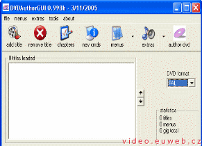
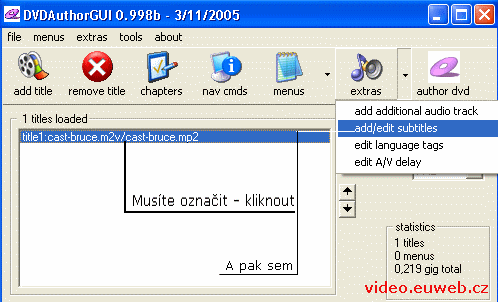

AVI na DVD s titulky
Budeme potřebovat:
- TMPGEnc - převede AVI na MPEG
- DVDAuthorGUI - udělá z MPEGu DVD, plus přídá titulky.
- Subtitle Tool - Upraví titulky, pokud nesedí do videa.
AVI do MPEG
Nejprve je nutné převást film v AVI na dva soubory. A to: *.m2v - soubor s videem a *.mp2 - audio. Dělá se to v TMPGEnc.
Spusťte si tedy TMPGEnc. Spolu s ním se spustí i "Kouzelník" (Wizard). Nechteho zapnutého, pomůže.
V kroku 1/5 vybereme výstupní formát videa. V našem případě to bude DVD PAL. Rozlišení bych zvolil podle kvality AVI, při hodně kostičkovaném zdroji rozhodně rozlišení zmenšete.
V kroku 2/5 zvolíme vstupní video soubor. Ostatní nastavení se týkají zdroje (nikoli tedy výstupu) a nemá cenu je měnit.
V kroku 3/5 se přidávají různé filtry. Myslím si, že jejich názvy samy řeknou, co dělají a nemá cenu se o tom moc rozepisovat. Jen bych rád upozornil, že "Odstranění šumu" prodlužuju dobu zpracování videa. A to tak, že hodně.
Další krok - 4/5 slouží k vybrání datového toku neboli bitare. Můžete volit kb za sekundu, požadovanou velikost souboru nebo zaplněnost média. Pokud kliknete na tlačítko "Expert" (vpravo od "Odhadované velikosti souboru"), zobrazí se vám tabulka, kde budete moci nastavit další hodnoty. Kvalitě videa prospěje "Kvalita hledání pohybu" na "Nejvyšší kvalitě" a "Typ datového toku" na "2- fázový VBR". obě volby ale zvyšují délku zpracování. A to tak, že "Odstranění šumu" je proti tomu hadr.
A teď bacha. Mohlo by se zdát, že krok 5/5 bude stačit prokliknout, ale není tomu tak. Pod kolonkou "Výstupní soubor" je políčko "Výstupní video a audio samostatně", což musíte zaškrtnout. Teď můžete kliknout na OK a počkat, než se komprimace zdárně povede.
Dodělání DVD
Předpokládám, že předchozí krok se vám povedl a můžeme jít dál.
Pro převod na DVD budeme potřebovat DVDAuthorGUI. Instalace je jednoduchá, ale mně program nefungoval ve složce obshující "ů". Předpokládám, že to nejde, když je v cestě k programu diakritika. Pokud to tak není, opravte mě.
Doufám, že jste nainstalovali a spustili program. Vypadá to takhle:
{kind=link}
Nejprve musíme vložit soubor s videem a se zvukem. Klikněte na file/ add new title... Objeví se vám dialogové okno, ve kterém vyberete nejprve video soubor (přípona m2v) a poté audio soubor (přípona mp2).
Teď je čas na přidání titulků. Program podporuje dost formátů a to: *.sub, *. ssa, *.srt, *.smi, *.rt, *.txt, *.aqt, plus asi další. Jak na to: Označte vámi přidaný soubor, klikněte na šipku u tlačítka "extras" a z nabídky vyberte "add/edit subtitles".
V následujícím dialogovém okně kliknete na "add text subtitle" a vyberete titulky. Musíte také změnit kódování. Mění se to v nabídce "character set". S největší pravděpodobností to bude "CP1250". Můžete změnit písmo i jeho velikost, barvy nenastavíte.
Nyní musíte nastavit jazyk, který se zobrazí v přehrávači. Klikněte opět na šipku u "extras" (viz obrázek nahoře) a vyberte "edit language tags". V dialogovém okénku kliknete na "add sub tag" Do seznamu nahoře se přidá řádek "Subtitle tag: JAZYK". Asi jste poznali, že se to mění pod tímto seznamem v nabídce. To samé udělejte se zvukem ("add audio tag" a stejný postup).
Komprimace začne poté, co kliknete na "author dvd". Uložení je poměrně netradiční, vybíráte složku, do které se výsledný soubor nakopíruje.
Teď stačí jen počkat, až DVDAuthorGUI udělá svoje. A je vymalováno!
Video na PC: Vytvořeno v roce 2005 a víc. Autorem je Jan 'Šlaha' Šlahora. Veškerá práva vyhrazena autorům článků. Pokud není uvedeno jinak, jsem to já.